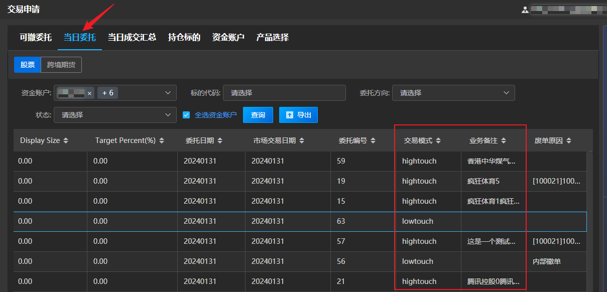
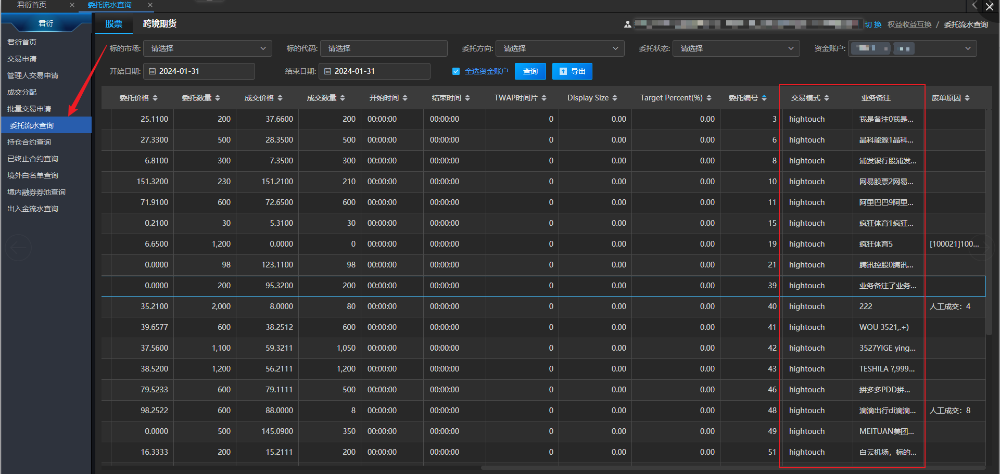
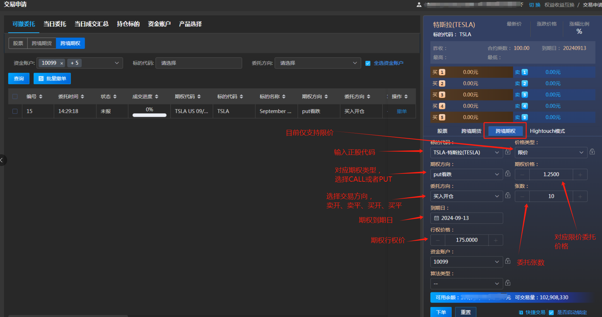

Introduction
指令输入
在交易界面点击“Hightouch”tab进行下单。需要填写证券代码、资金账号、委托类型、委托价格（限价类型需要填写，市价类型不显示）、委托数量，业务备注（支持输入50个汉字），其余操作与股票相同。

交易模式查询
有两个界面可以查询到委托的交易模式，以及Hightouch模式填写的业务备注。
1、在当日委托菜单界面点击股票tab查看当日可撤委托，交易模式和业务备注详情在每条记录后面交易模式和业务备注两个字段展示。

- 在委托流水查询界面点击股票tab查看账户委托流水，交易模式和业务备注详情在每条记录后面交易模式和业务备注两个字段展示。

跨境期权交易操作
跨境期权开仓交易申请
在菜单界面和交易界面分别选中跨境期权tab，查询跨境期权相关委托信息并进行交易。
目前仅支持：港交所、纽交所、纳斯达克三个市场的正股和ETF期权交易。界面要素如下图所示。
